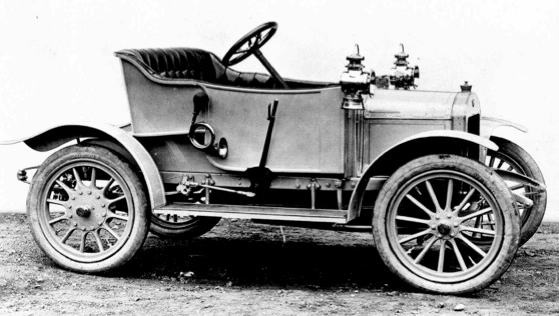

In het boekje Autopia passeert een flink aantal ontwerpers en ontwerpen de revue. Zonder de illusie te hebben volledig te zijn, geef ik hieronder een kort (min of meer chronologisch) overzicht van de belangrijkste namen en modellen.
| Auto | Naam | Ontwerper / fabrikant | Jaartallen | Bijzonderheden | |
|---|---|---|---|---|---|
| Patent Motorwagen no. 1 | Carl Benz | 1886–1893 | |||
|  | Austin 7 hp | Herbert Austin | 1909–1911 | ||
| Austin 7 | Herbert Austin | 1923-1939 | |||
|
Panhard et Levassor | Panhard et Levassor | 1890–1891 | ||
| Mercedes 35 CV | Wilhelm Maybach (Daimler) | 1901 | Daimler klonk te Duits in een land dat nog altijd was vervuld van wraakgevoelgens over de verloren oorlog met Duitsland in 1871. Jellink suggereerde een nieuwe naam: Mercede, naar zijn destijds tienjarige dochtertje. Zo ontstond de Mercedes 35pk, die de Nice Speed Week van 1901 domineerde (p.34). | ||
|
T-Ford | Henry Ford | 1908–1927 | In 1906 had de latere president Woodrow Wilson nog gewaarschuwd dat de auto het socialisme zou kunnen bevorderen, maar dankzij Ford werd de auto juist hde beste proaganda voor het kapitalisme (p.62). | |
|
LaSalle 1927 | Harley Earl (LaSalle, General Motors, Caddilac) | 1927-1933 | Elk jaar brachten de merken van General Motors een nieuwe model uit, zodat de klant die een beetje ij wilde blijven zijn auto moest inruilen (p.89). | |
| Cadillac Series 40-62 | Harley Earl (LaSalle, General Motors, Caddilac) | 1940–1964 | Het begon aarzelend, met twee bescheiden staartvinnnen op de Cadillac 1948, geïnspireerd op het gevechtsvliegtuig Lockheed P-38, dat Earl tijdens de oorlog had gezien (p.150). | ||
| Chrystel Airflow | Paul Jaray | 1934–1937 | Jaray kwam uit de luchtvaart en had een windtunel gebruikt voor de ontwikkeling van een Zeppelin (p.93). | ||
| Tatra 77 | Tatra Company | Paul Jaray | 1934–1938 | Auto's werken niet alleen gestroomlijnd om technische redenen. De stroomlijn was ook een mode die moderniteit suggereerde met vormen die waren ontleend aan de luchtvaart (p.93). | |
| Citroën type A | Jules Salomon | 1919-1921 | |||
| Citroën Traction Avant | André Levèbvre en Flaminio Bertoni | 1934–1957 | Een auto die alle andere auto's overtrof en alleen gemaakt kon worden in Parijs, de wereldhoofdstad van kunst en avant-garde. Het werd de Traction Avant (p.110). | ||
|
Fiat Topolino | Giovanni Agnelli | 1936-1955 | Giovanni Agnelli van Fiat deed zijn best om de Italiaanse Henry Ford te worden. IN 1923 opende hij de Lingotto-fabriek in Turijn (p.124). | |
| Chevrolet Impala | George Walker (General Motors) | 1958 (-heden eigenlijk) | Als een Amerikaanse arbeider een beetje meer geld krijgt, wil hij een groter huis en een grotere auto (p.147). | ||
| Ford Edsel | Roy Brown | 1958-1960 | Brown had geprobeerd een auto te maken die uniek en meteen herkenbaar was. Daar was hij zeker in geslaagd (p.169). | ||
|
Ford Cortina | Roy Brown | 1962-1982 | ||
|
Toute Petite Voiture / 2CV | Pierre-Jules Boulanger | 1949-1990 | Volgens het oorspronkelijke programma van eisen moest de 2CV zelfs met klompen gereden kunnen worden (p.183). | |
| Mini | Alex Issigonis | 1959-1968 | Issigonis verzette zich tegen comfort. Hij streed tegen de toepassing van raampjes die opegedraaid konden worden. Schuifraampjes waren goed genoed (p.185). | ||
|
Daf 600 | Joan van der Brugghen | 1958-1963 | DAF had te weinig rekening gehouden met de mannelijke beleving van de auto als een symbool van macht, status en sportiviteit. Schakelen werd in die jaren bij uitstek 'sportief' gevonden (p.186). | |
|
Peugeot 404 | Battista Farina (Pininfarina | 1960-1975 | Farina was niet te beroerd om zijn ontwerpen met kleine wijzigingen door te verkopen aan andere merken (p.197) | |
|
Citroën DS | André Levèbvre en Flaminio Beroni | 1955-1975 | De DS was de grote sensatie van de Parijse autosalon van 1955. Volgens Citroën zelf had alleen de dood van Stalin meer aandacht gekregen dan de introudctie van dit nieuwe vlaggenschip (p.199) |